- 00 开篇词 想成为技术牛人？先搞定网络协议！.md
- 01 为什么要学习网络协议？.md
- 02 网络分层的真实含义是什么？.md
- 03 ifconfig：最熟悉又陌生的命令行.md
- 04 DHCP与PXE：IP是怎么来的，又是怎么没的？.md
- 05 从物理层到MAC层：如何在宿舍里自己组网玩联机游戏？.md
- 06 交换机与VLAN：办公室太复杂，我要回学校.md
- 07 ICMP与ping：投石问路的侦察兵.md
- 08 世界这么大，我想出网关：欧洲十国游与玄奘西行.md
- 09 路由协议：西出网关无故人，敢问路在何方.md
- 10 UDP协议：因性善而简单，难免碰到“城会玩”.md
- 11 TCP协议（上）：因性恶而复杂，先恶后善反轻松.md
- 12 TCP协议（下）：西行必定多妖孽，恒心智慧消磨难.md
- 13 套接字Socket：Talk is cheap, show me the code.md
- 14 HTTP协议：看个新闻原来这么麻烦.md
- 15 HTTPS协议：点外卖的过程原来这么复杂.md
- 16 流媒体协议：如何在直播里看到美女帅哥？.md
- 17 P2P协议：我下小电影，99%急死你.md
- 18 DNS协议：网络世界的地址簿.md
- 19 HttpDNS：网络世界的地址簿也会指错路.md
- 20 CDN：你去小卖部取过快递么？.md
- 21 数据中心：我是开发商，自己拿地盖别墅.md
- 22 VPN：朝中有人好做官.md
- 23 移动网络：去巴塞罗那，手机也上不了脸书.md
- 24 云中网络：自己拿地成本高，购买公寓更灵活.md
- 25 软件定义网络：共享基础设施的小区物业管理办法.md
- 26 云中的网络安全：虽然不是土豪，也需要基本安全和保障.md
- 27 云中的网络QoS：邻居疯狂下电影，我该怎么办？.md
- 28 云中网络的隔离GRE、VXLAN：虽然住一个小区，也要保护隐私.md
- 29 容器网络：来去自由的日子，不买公寓去合租.md
- 30 容器网络之Flannel：每人一亩三分地.md
- 31 容器网络之Calico：为高效说出善意的谎言.md
- 32 RPC协议综述：远在天边，近在眼前.md
- 33 基于XML的SOAP协议：不要说NBA，请说美国职业篮球联赛.md
- 34 基于JSON的RESTful接口协议：我不关心过程，请给我结果.md
- 35 二进制类RPC协议：还是叫NBA吧，总说全称多费劲.md
- 36 跨语言类RPC协议：交流之前，双方先来个专业术语表.md
- 37 知识串：用双十一的故事串起碎片的网络协议（上）.md
- 38 知识串：用双十一的故事串起碎片的网络协议（中）.md
- 39 知识串：用双十一的故事串起碎片的网络协议（下）.md
- 40 搭建一个网络实验环境：授人以鱼不如授人以渔.md
- 加餐1 创作故事：我是如何创作“趣谈网络协议”专栏的？.md
- 协议专栏特别福利 答疑解惑1期.md
- 协议专栏特别福利 答疑解惑2期.md
- 协议专栏特别福利 答疑解惑3期.md
- 协议专栏特别福利 答疑解惑4期.md
- 协议专栏特别福利 答疑解惑5期.md
- 结束语 放弃完美主义，执行力就是限时限量认真完成.md
22 VPN：朝中有人好做官
前面我们讲到了数据中心，里面很复杂，但是有的公司有多个数据中心，需要将多个数据中心连接起来，或者需要办公室和数据中心连接起来。这该怎么办呢？
-
第一种方式是走公网，但是公网太不安全，你的隐私可能会被别人偷窥。
-
第二种方式是租用专线的方式把它们连起来，这是土豪的做法，需要花很多钱。
-
第三种方式是用VPN来连接，这种方法比较折中，安全又不贵。
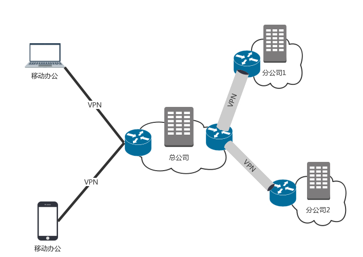
VPN，全名Virtual Private Network，虚拟专用网，就是利用开放的公众网络，建立专用数据传输通道，将远程的分支机构、移动办公人员等连接起来。
VPN是如何工作的？
VPN通过隧道技术在公众网络上仿真一条点到点的专线，是通过利用一种协议来传输另外一种协议的技术，这里面涉及三种协议：乘客协议、隧道协议和承载协议。
我们以IPsec协议为例来说明。
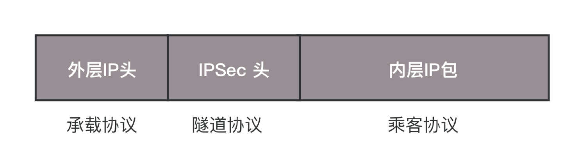
你知道如何通过自驾进行海南游吗？这其中，你的车怎么通过琼州海峡呢？这里用到轮渡，其实这就用到隧道协议。
在广州这边开车是有“协议”的，例如靠右行驶、红灯停、绿灯行，这个就相当于“被封装”的乘客协议。当然在海南那面，开车也是同样的协议。这就相当于需要连接在一起的一个公司的两个分部。
但是在海上坐船航行，也有它的协议，例如要看灯塔、要按航道航行等。这就是外层的承载协议。
那我的车如何从广州到海南呢？这就需要你遵循开车的协议，将车开上轮渡，所有通过轮渡的车都关在船舱里面，按照既定的规则排列好，这就是隧道协议。
在大海上，你的车是关在船舱里面的，就像在隧道里面一样，这个时候内部的乘客协议，也即驾驶协议没啥用处，只需要船遵从外层的承载协议，到达海南就可以了。
到达之后，外部承载协议的任务就结束了，打开船舱，将车开出来，就相当于取下承载协议和隧道协议的头。接下来，在海南该怎么开车，就怎么开车，还是内部的乘客协议起作用。
在最前面的时候说了，直接使用公网太不安全，所以接下来我们来看一种十分安全的VPN，IPsec VPN。这是基于IP协议的安全隧道协议，为了保证在公网上面信息的安全，因而采取了一定的机制保证安全性。
-
机制一：私密性，防止信息泄露给未经授权的个人，通过加密把数据从明文变成无法读懂的密文，从而确保数据的私密性。- 前面讲HTTPS的时候，说过加密可以分为对称加密和非对称加密。对称加密速度快一些。而VPN一旦建立，需要传输大量数据，因而我们采取对称加密。但是同样，对称加密还是存在加密密钥如何传输的问题，这里需要用到因特网密钥交换（IKE，Internet Key Exchange）协议。
-
机制二：完整性，数据没有被非法篡改，通过对数据进行hash运算，产生类似于指纹的数据摘要，以保证数据的完整性。
-
机制三：真实性，数据确实是由特定的对端发出，通过身份认证可以保证数据的真实性。
那如何保证对方就是真正的那个人呢？
-
第一种方法就是预共享密钥，也就是双方事先商量好一个暗号，比如“天王盖地虎，宝塔镇河妖”，对上了，就说明是对的。
-
另外一种方法就是用数字签名来验证。咋签名呢？当然是使用私钥进行签名，私钥只有我自己有，所以如果对方能用我的数字证书里面的公钥解开，就说明我是我。
基于以上三个特性，组成了IPsec VPN的协议簇。这个协议簇内容比较丰富。
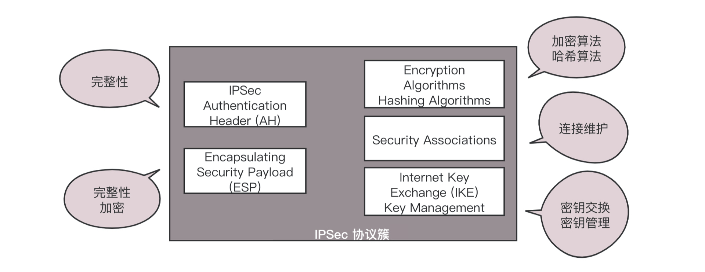
在这个协议簇里面，有两种协议，这两种协议的区别在于封装网络包的格式不一样。
-
一种协议称为AH（Authentication Header），只能进行数据摘要 ，不能实现数据加密。
-
还有一种ESP（Encapsulating Security Payload），能够进行数据加密和数据摘要。
在这个协议簇里面，还有两类算法，分别是加密算法和摘要算法。
这个协议簇还包含两大组件，一个用于VPN的双方要进行对称密钥的交换的IKE组件，另一个是VPN的双方要对连接进行维护的SA（Security Association）组件。
IPsec VPN的建立过程
下面来看IPsec VPN的建立过程，这个过程分两个阶段。
第一个阶段，建立IKE自己的SA。这个SA用来维护一个通过身份认证和安全保护的通道，为第二个阶段提供服务。在这个阶段，通过DH（Diffie-Hellman）算法计算出一个对称密钥K。
DH算法是一个比较巧妙的算法。客户端和服务端约定两个公开的质数p和q，然后客户端随机产生一个数a作为自己的私钥，服务端随机产生一个b作为自己的私钥，客户端可以根据p、q和a计算出公钥A，服务端根据p、q和b计算出公钥B，然后双方交换公钥A和B。
到此客户端和服务端可以根据已有的信息，各自独立算出相同的结果K，就是对称密钥。但是这个过程，对称密钥从来没有在通道上传输过，只传输了生成密钥的材料，通过这些材料，截获的人是无法算出的。
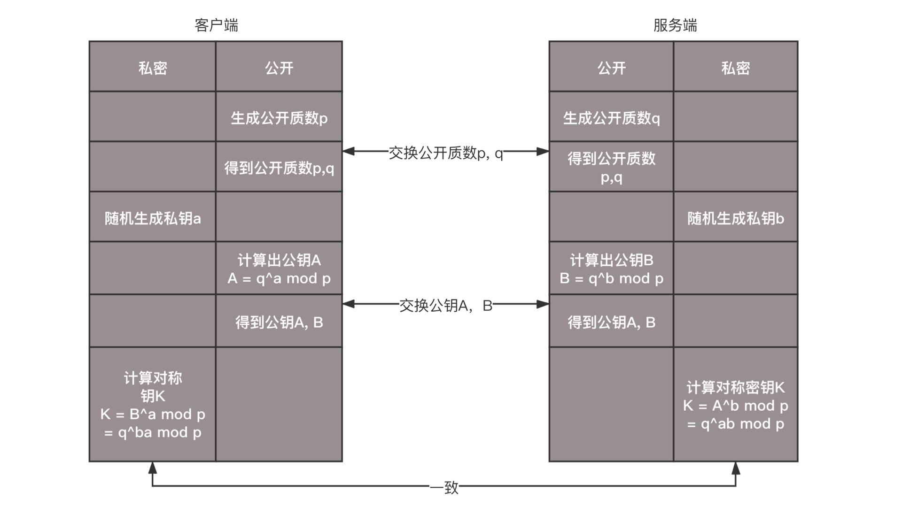
有了这个对称密钥K，接下来是第二个阶段，建立IPsec SA。在这个SA里面，双方会生成一个随机的对称密钥M，由K加密传给对方，然后使用M进行双方接下来通信的数据。对称密钥M是有过期时间的，会过一段时间，重新生成一次，从而防止被破解。
IPsec SA里面有以下内容：
-
SPI（Security Parameter Index），用于标识不同的连接；
-
双方商量好的加密算法、哈希算法和封装模式；
-
生存周期，超过这个周期，就需要重新生成一个IPsec SA，重新生成对称密钥。
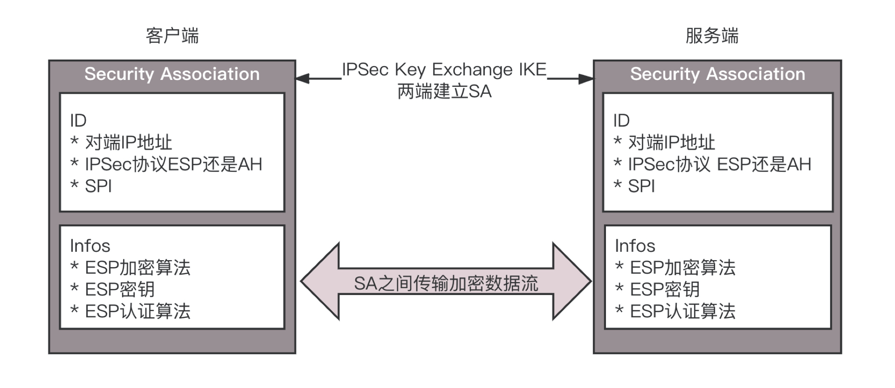
当IPsec建立好，接下来就可以开始打包封装传输了。
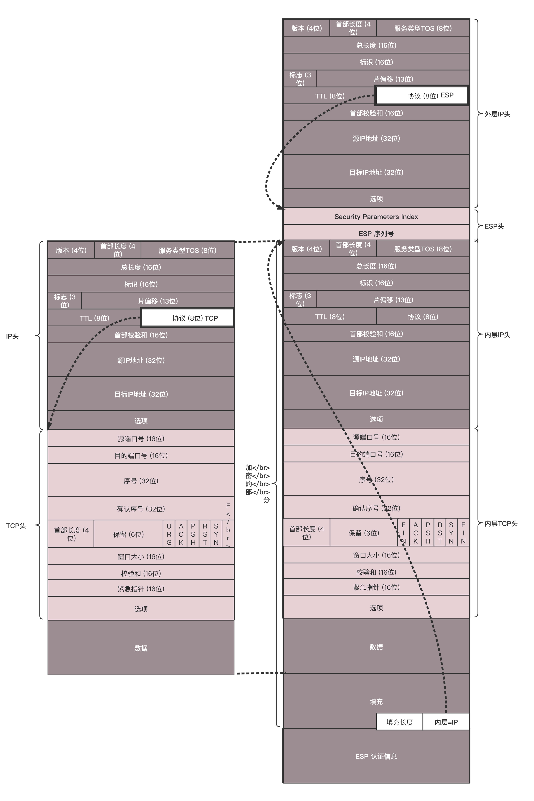
左面是原始的IP包，在IP头里面，会指定上一层的协议为TCP。ESP要对IP包进行封装，因而IP头里面的上一层协议为ESP。在ESP的正文里面，ESP的头部有双方商讨好的SPI，以及这次传输的序列号。
接下来全部是加密的内容。可以通过对称密钥进行解密，解密后在正文的最后，指明了里面的协议是什么。如果是IP，则需要先解析IP头，然后解析TCP头，这是从隧道出来后解封装的过程。
有了IPsec VPN之后，客户端发送的明文的IP包，都会被加上ESP头和IP头，在公网上传输，由于加密，可以保证不被窃取，到了对端后，去掉ESP的头，进行解密。
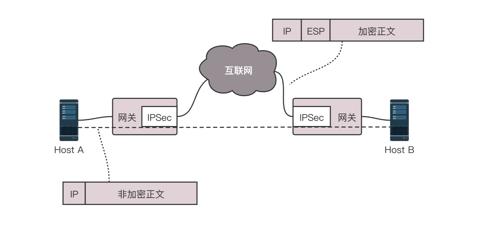
这种点对点的基于IP的VPN，能满足互通的要求，但是速度往往比较慢，这是由底层IP协议的特性决定的。IP不是面向连接的，是尽力而为的协议，每个IP包自由选择路径，到每一个路由器，都自己去找下一跳，丢了就丢了，是靠上一层TCP的重发来保证可靠性。
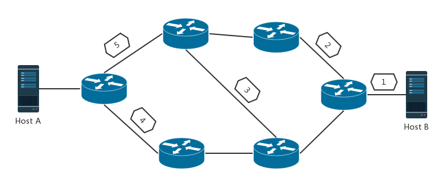
因为IP网络从设计的时候，就认为是不可靠的，所以即使同一个连接，也可能选择不同的道路，这样的好处是，一条道路崩溃的时候，总有其他的路可以走。当然，带来的代价就是，不断的路由查找，效率比较差。
和IP对应的另一种技术称为ATM。这种协议和IP协议的不同在于，它是面向连接的。你可以说TCP也是面向连接的啊。这两个不同，ATM和IP是一个层次的，和TCP不是一个层次的。
另外，TCP所谓的面向连接，是不停地重试来保证成功，其实下层的IP还是不面向连接的，丢了就丢了。ATM是传输之前先建立一个连接，形成一个虚拟的通路，一旦连接建立了，所有的包都按照相同的路径走，不会分头行事。
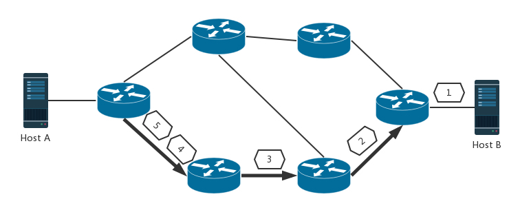
好处是不需要每次都查路由表的，虚拟路径已经建立，打上了标签，后续的包傻傻的跟着走就是了，不用像IP包一样，每个包都思考下一步怎么走，都按相同的路径走，这样效率会高很多。
但是一旦虚拟路径上的某个路由器坏了，则这个连接就断了，什么也发不过去了，因为其他的包还会按照原来的路径走，都掉坑里了，它们不会选择其他的路径走。
ATM技术虽然没有成功，但其屏弃了繁琐的路由查找，改为简单快速的标签交换，将具有全局意义的路由表改为只有本地意义的标签表，这些都可以大大提高一台路由器的转发功力。
有没有一种方式将两者的优点结合起来呢？这就是多协议标签交换（MPLS，Multi-Protocol Label Switching）。MPLS的格式如图所示，在原始的IP头之外，多了MPLS的头，里面可以打标签。
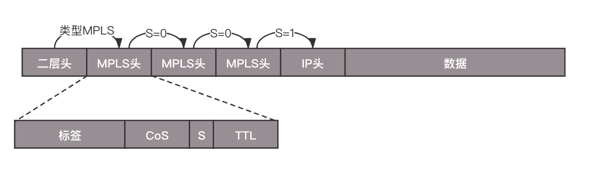
在二层头里面，有类型字段，0x0800表示IP，0x8847表示MPLS Label。
在MPLS头里面，首先是标签值占20位，接着是3位实验位，再接下来是1位栈底标志位，表示当前标签是否位于栈底了。这样就允许多个标签被编码到同一个数据包中，形成标签栈。最后是8位TTL存活时间字段，如果标签数据包的出发TTL值为0，那么该数据包在网络中的生命期被认为已经过期了。
有了标签，还需要设备认这个标签，并且能够根据这个标签转发，这种能够转发标签的路由器称为标签交换路由器（LSR，Label Switching Router）。
这种路由器会有两个表格，一个就是传统的FIB，也即路由表，另一个就是LFIB，标签转发表。有了这两个表，既可以进行普通的路由转发，也可以进行基于标签的转发。
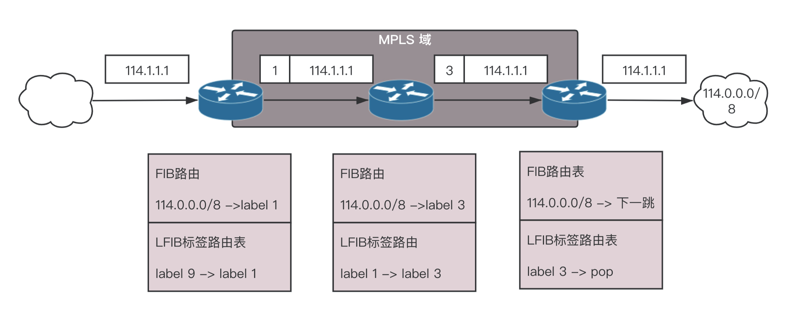
有了标签转发表，转发的过程如图所示，就不用每次都进行普通路由的查找了。
这里我们区分MPLS区域和非MPLS区域。在MPLS区域中间，使用标签进行转发，非MPLS区域，使用普通路由转发，在边缘节点上，需要有能力将对于普通路由的转发，变成对于标签的转发。
例如图中要访问114.1.1.1，在边界上查找普通路由，发现马上要进入MPLS区域了，进去了对应标签1，于是在IP头外面加一个标签1，在区域里面，标签1要变成标签3，标签3到达出口边缘，将标签去掉，按照路由发出。
这样一个通过标签转换而建立的路径称为LSP，标签交换路径。在一条LSP上，沿数据包传送的方向，相邻的LSR分别叫上游LSR（upstream LSR）和下游LSR（downstream LSR）。
有了标签，转发是很简单的事，但是如何生成标签，却是MPLS中最难修炼的部分。在MPLS秘笈中，这部分被称为LDP（Label Distribution Protocol），是一个动态的生成标签的协议。
其实LDP与IP帮派中的路由协议十分相像，通过LSR的交互，互相告知去哪里应该打哪个标签，称为标签分发，往往是从下游开始的。
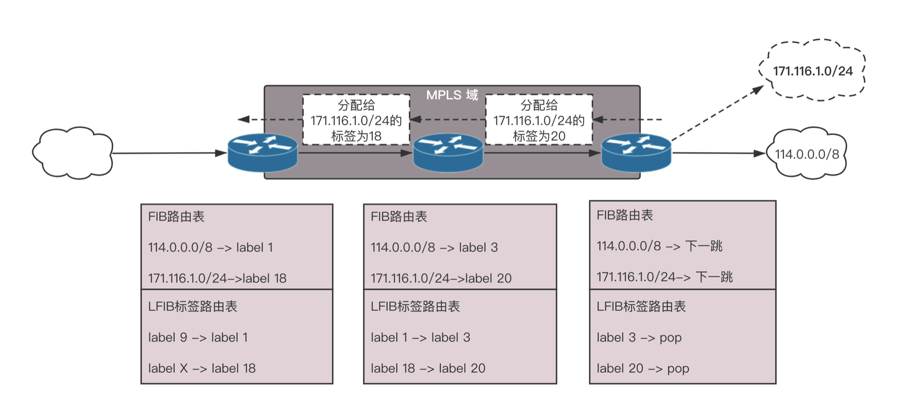
如果有一个边缘节点发现自己的路由表中出现了新的目的地址，它就要给别人说，我能到达一条新的路径了。
如果此边缘节点存在上游LSR，并且尚有可供分配的标签，则该节点为新的路径分配标签，并向上游发出标签映射消息，其中包含分配的标签等信息。
收到标签映射消息的LSR记录相应的标签映射信息，在其标签转发表中增加相应的条目。此LSR为它的上游LSR分配标签，并继续向上游LSR发送标签映射消息。
当入口LSR收到标签映射消息时，在标签转发表中增加相应的条目。这时，就完成了LSP的建立。有了标签，转发轻松多了，但是这个和VPN什么关系呢？
可以想象，如果我们VPN通道里面包的转发，都是通过标签的方式进行，效率就会高很多。所以要想个办法把MPLS应用于VPN。
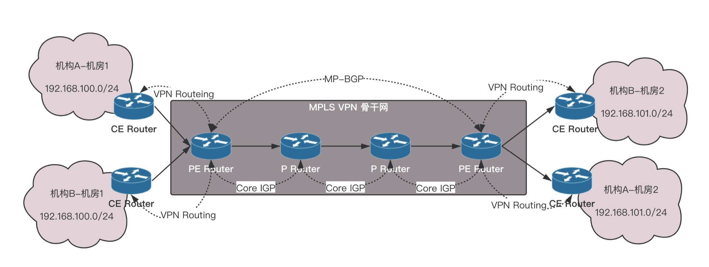
在MPLS VPN中，网络中的路由器分成以下几类：
-
PE（Provider Edge）：运营商网络与客户网络相连的边缘网络设备；
-
CE（Customer Edge）：客户网络与PE相连接的边缘设备；
-
P（Provider）：这里特指运营商网络中除PE之外的其他运营商网络设备。
为什么要这样分呢？因为我们发现，在运营商网络里面，也即P Router之间，使用标签是没有问题的，因为都在运营商的管控之下，对于网段，路由都可以自己控制。但是一旦客户要接入这个网络，就复杂得多。
首先是客户地址重复的问题。客户所使用的大多数都是私网的地址(192.168.X.X;10.X.X.X;172.X.X.X)，而且很多情况下都会与其它的客户重复。
比如，机构A和机构B都使用了192.168.101.0/24网段的地址，这就发生了地址空间重叠（Overlapping Address Spaces）。
首先困惑的是BGP协议，既然VPN将两个数据中心连起来，应该看起来像一个数据中心一样，那么如何到达另一端需要通过BGP将路由广播过去，传统BGP无法正确处理地址空间重叠的VPN的路由。
假设机构A和机构B都使用了192.168.101.0/24网段的地址，并各自发布了一条去往此网段的路由，BGP将只会选择其中一条路由，从而导致去往另一个VPN的路由丢失。
所以PE路由器之间使用特殊的MP-BGP来发布VPN路由，在相互沟通的消息中，在一般32位IPv4的地址之前加上一个客户标示的区分符用于客户地址的区分，这种称为VPN-IPv4地址族，这样PE路由器会收到如下的消息，机构A的192.168.101.0/24应该往这面走，机构B的192.168.101.0/24则应该去另外一个方向。
另外困惑的是路由表，当两个客户的IP包到达PE的时候，PE就困惑了，因为网段是重复的。
如何区分哪些路由是属于哪些客户VPN内的？如何保证VPN业务路由与普通路由不相互干扰？
在PE上，可以通过VRF（VPN Routing&Forwarding Instance）建立每个客户一个路由表，与其它VPN客户路由和普通路由相互区分。可以理解为专属于客户的小路由器。
远端PE通过MP-BGP协议把业务路由放到近端PE，近端PE根据不同的客户选择出相关客户的业务路由放到相应的VRF路由表中。
VPN报文转发采用两层标签方式：
-
第一层（外层）标签在骨干网内部进行交换，指示从PE到对端PE的一条LSP。VPN报文利用这层标签，可以沿LSP到达对端PE；
-
第二层（内层）标签在从对端PE到达CE时使用，在PE上，通过查找VRF表项，指示报文应被送到哪个VPN用户，或者更具体一些，到达哪一个CE。这样，对端PE根据内层标签可以找到转发报文的接口。
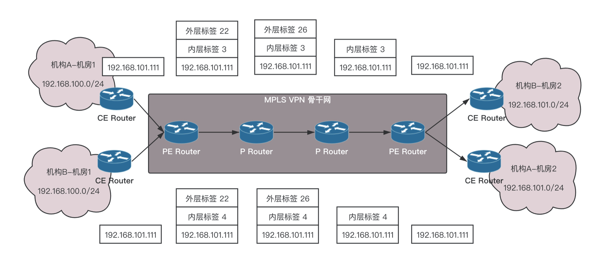
我们来举一个例子，看MPLS VPN的包发送过程。
-
机构A和机构B都发出一个目的地址为192.168.101.0/24的IP报文，分别由各自的CE将报文发送至PE。
-
PE会根据报文到达的接口及目的地址查找VPN实例表项VRF，匹配后将报文转发出去，同时打上内层和外层两个标签。假设通过MP-BGP配置的路由，两个报文在骨干网走相同的路径。
-
MPLS网络利用报文的外层标签，将报文传送到出口PE，报文在到达出口PE 2前一跳时已经被剥离外层标签，仅含内层标签。
-
出口PE根据内层标签和目的地址查找VPN实例表项VRF，确定报文的出接口，将报文转发至各自的CE。
-
CE根据正常的IP转发过程将报文传送到目的地。
小结
好了，这一节就到这里了，我们来总结一下：
-
VPN可以将一个机构的多个数据中心通过隧道的方式连接起来，让机构感觉在一个数据中心里面，就像自驾游通过琼州海峡一样；
-
完全基于软件的IPsec VPN可以保证私密性、完整性、真实性、简单便宜，但是性能稍微差一些；
-
MPLS-VPN综合和IP转发模式和ATM的标签转发模式的优势，性能较好，但是需要从运营商购买。
接下来，给你留两个思考题：
-
当前业务的高可用性和弹性伸缩很重要，所以很多机构都会在自建私有云之外，采购公有云，你知道私有云和公有云应该如何打通吗？
-
前面所有的上网行为，都是基于电脑的，但是移动互联网越来越成为核心，你知道手机上网都需要哪些协议吗？
我们的专栏更新到第22讲，不知你掌握得如何？每节课后我留的思考题，你都有没有认真思考，并在留言区写下答案呢？我会从已发布的文章中选出一批认真留言的同学，赠送学习奖励礼券和我整理的独家网络协议知识图谱。
欢迎你留言和我讨论。趣谈网络协议，我们下期见！
© 2019 - 2023 Liangliang Lee. Powered by Vert.x and hexo-theme-book.